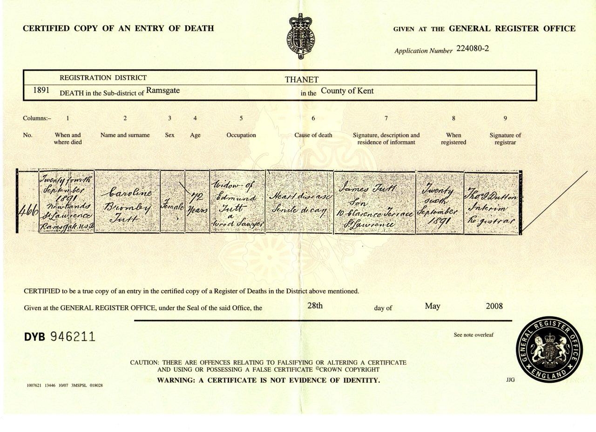
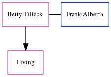

Caroline Bromley Tutt (née Page) c1821 - 1891
[ Home ] | [ Calendar ] | [ Surnames Index ] | [ Errors ] | [ Family History ]A laundress and the child of Thomas Page (a labourer) and Caroline Marsh, Caroline Page, the great-great-grandmother of Nigel Horne, was born in Uphill, Folkestone, Kent, England c. 18211,2,3,4,5,6, was baptised in Hawkinge, Kent, England on 6 May 1821 and married Edmund Tutt (a sawyer with whom she had 6 children: Eliza, Jane, James, Sarah Maria, Caroline Bromley and Edmund Thomas) at Parish Church of St Mary & St Eanswythe, Church Street, Folkestone, Kent, England on 11 Apr 18478 (Folkestone Parish Church).
During her life, she was living at 40 George Street, Buckland, Kent on 30 Mar 185112 - less than a mile from her niece Jane Tutt who was living at 40 George Street, Buckland, Kent; at 13 Shooter's Hill, Buckland, Kent on 7 Apr 186110 - less than a mile from her niece Jane Tutt who was living at 13 Shooter's Hill, Buckland, Kent, when she was living with her daughter Jane, following the death of her husband on 21 Dec 1858; and at 18 Clarence Terrace, St Lawrence, Thanet, Kent on 3 Apr 188111 - less than a mile from her niece Jane Tutt who was living at 18 Clarence Terrace, St Lawrence, Thanet, Kent.
She died on 24 Sept 1891 at Newlands, St Lawrence, Thanet, Kent5,7 (heart disease and senile decay) and was buried there on 28 Sept 18917,9.
Parents
- Thomas was born c. 1790
- Caroline was born c. 1790
Children
- Eliza was born on 15 Sept 1847
- Jane was born on 12 May 1849
- James was born on 16 Jan 1851
- Sarah Maria was born c. Feb 1855
- Caroline Bromley was born c. May 1857
- Edmund Thomas was born c. Aug 1859
Citations
- 1851 England Census Online publication - Provo, UT, USA: The Generations Network, Inc., 2005.Original data - Census Returns of England and Wales, 1851. Kew, Surrey, England: The National Archives of the UK (TNA): Public Record Office (PRO), 1851. Data imaged from the National
- 1861 England Census Online publication - Provo, UT, USA: The Generations Network, Inc., 2005.Original data - Census Returns of England and Wales, 1861. Kew, Surrey, England: The National Archives of the UK (TNA): Public Record Office (PRO), 1861. Data imaged from the National
- 1881 England Census Online publication - Provo, UT, USA: The Generations Network, Inc., 2004. 1881 British Isles Census Index provided by The Church of Jesus Christ of Latter-day Saints © Copyright 1999 Intellectual Reserve, Inc. All rights reserved. All use is subject to the
- England & Wales deaths 1837-2007 - Findmypast
- England & Wales, FreeBMD Death Index: 1837-1915 Online publication - Provo, UT, USA: The Generations Network, Inc., 2006.Original data - General Register Office. England and Wales Civil Registration Indexes. London, England: General Register Office. © Crown copyright. Published by permission of the Cont
- Kent, Canterbury Archdeaconry burials 1538-1988 - Findmypast
- England, Select Deaths and Burials, 1538-1991 Ancestry.com Operations, Inc.
- England & Wales, FreeBMD Marriage Index: 1837-1915 Online publication - Provo, UT, USA: The Generations Network, Inc., 2006.Original data - General Register Office. England and Wales Civil Registration Indexes. London, England: General Register Office. © Crown copyright. Published by permission of the Cont
- England Deaths & Burials 1538-1991 - Findmypast
- 1861 England, Wales & Scotland Census - Findmypast (was age 40 and the head of the household)
- 1881 England, Wales & Scotland Census - Findmypast (was age 62 and the head of the household)
- 1851 England, Wales & Scotland Census - Findmypast (was age 30 and the wife of the head of the household)
Media
Thanet Advertiser 26 Sep 1891

Caroline Bromley Page - Death Certificate

Edmund Tutt - Caroline Page - Marriage Certificate

Edmund Tutt - Caroline Page - Marriage Certificate
Thanet Advertiser - 26 Sep 1891
England & Wales deaths 1837-2007 - BMD/D/1891/3/AZ/000321/082
Kent, Canterbury Archdeaconry burials 1538-1988 - GBPRS/CANT/D/95280665
Kent, Canterbury Archdeaconry marriages 1538-1928 - GBPRS/CANT/M/97001489/2
1881 England, Wales & Scotland Census - GBC/1881/0004863747
1861 England, Wales & Scotland Census - GBC/1861/0003612052
Kent Baptisms - GBPRS/CANT/B/96338488
England Births & Baptisms 1538-1975 - R_884298316
England Deaths & Burials 1538-1991 - R_277115621
Family Tree
Map
Generated by ged2site. Last updated on Jul 3, 2024
Known Issues
Census information missing between Census UK 1861 and Census UK 1881